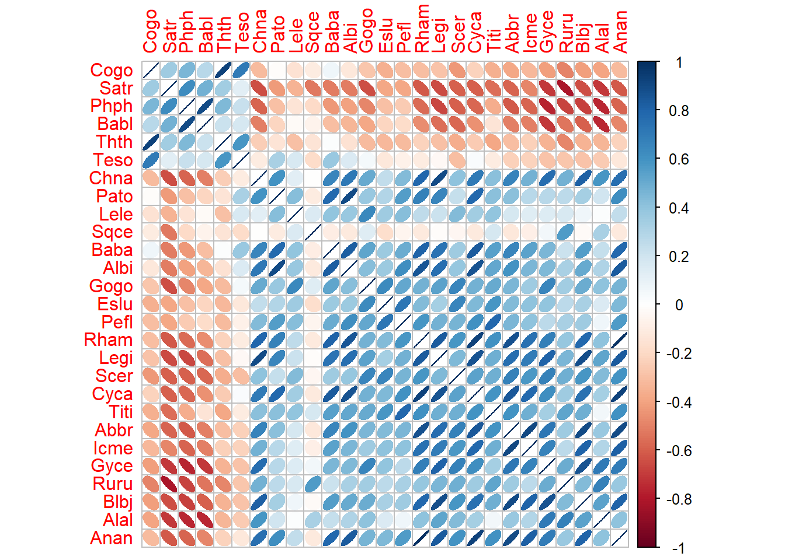
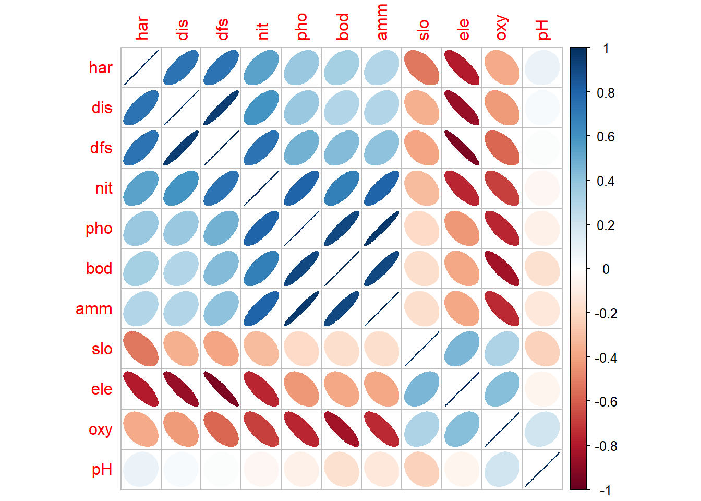
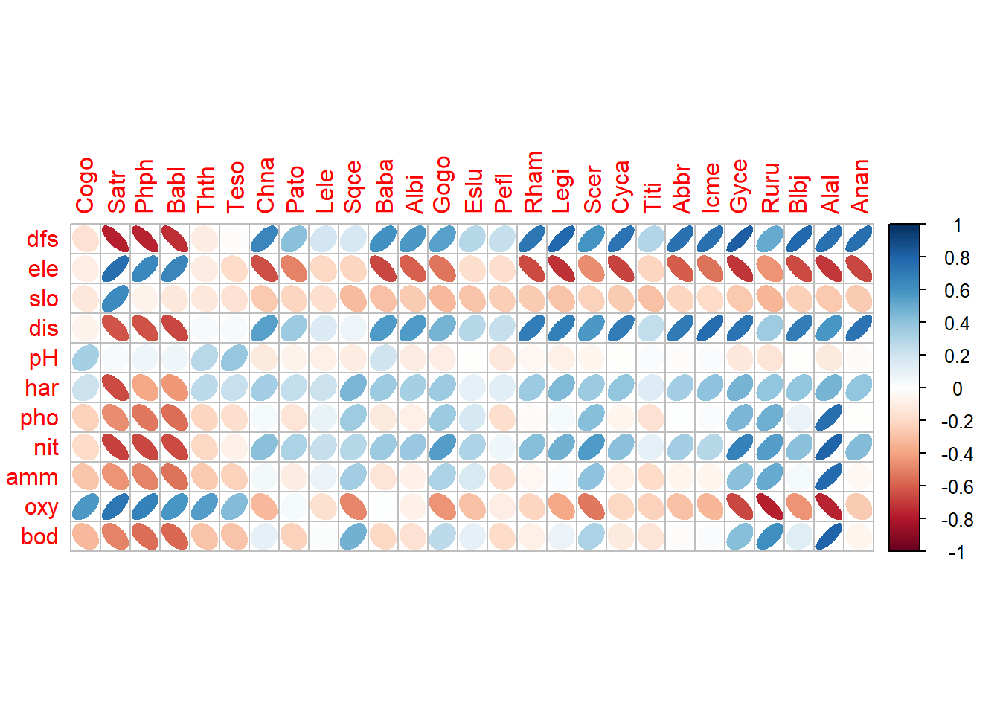
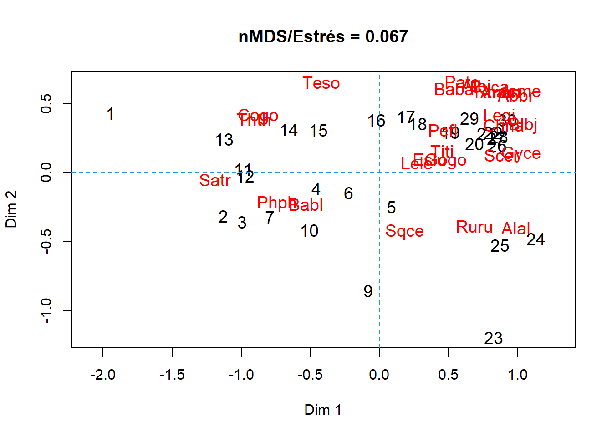
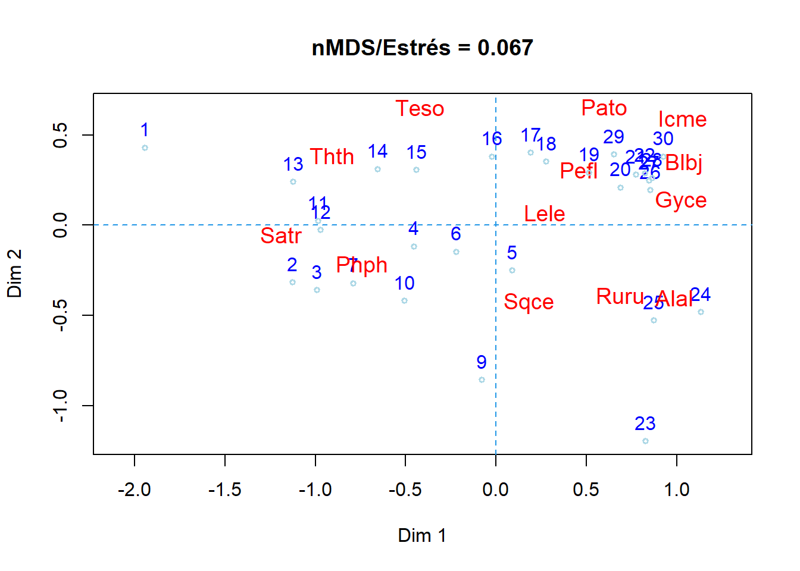
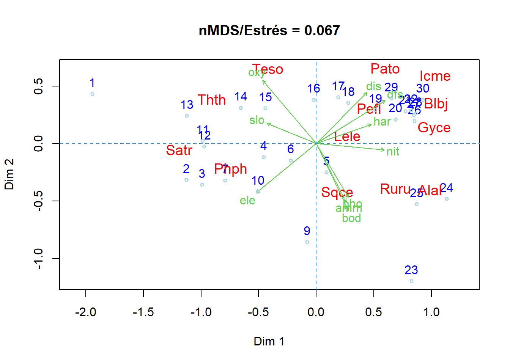
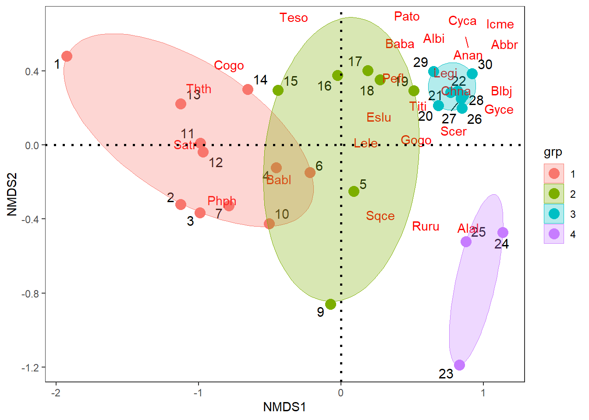
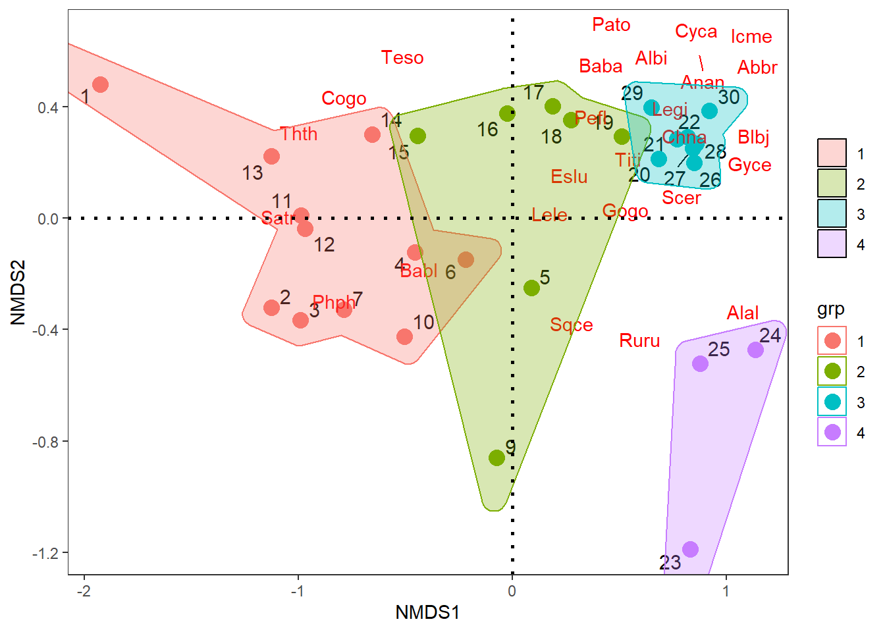
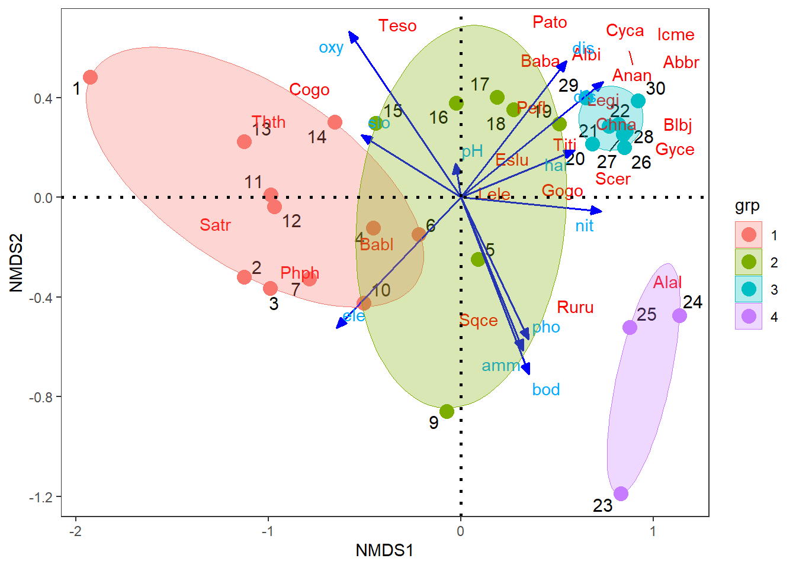

library(vegan) # Para el NMDS y extracción de coord. ambientales
library(ggbiplot) # Para la realización de las figuras
library(ggsci) # Complemento del ggplot2 en las figuras
library(ggforce) # Complemento del ggplot2 en las figuras
library(concaveman) # Complemento del ggplot2 en las figuras
library(ggplot2) # Paquete gráfico
library(reshape2) # Complemento del ggplot2 en las figuras
library(ggrepel) # Complemento del ggplot2 en las figuras
library(corrplot) # Figuras de elipses
library(kableExtra) # Para la edición de las tablas
Exploración gráfica multivariada - base peces ríos Doubs de Francia
Objetivo de la actividad:
Datos tomados de Verneaux (1973) y por Verneaux et al. (2003) En: Borcard et al. (2011, 2018). Se utilizan especies de peces para caracterizar zonas ecológicas a lo largo de ríos y arroyos europeos, empleando a estos organismos como indicadores biológicos de los cuerpos de agua. Las condiciones ecológicas en los ríos van desde aguas relativamente vírgenes, bien oxigenadas y oligotróficas hasta aguas eutróficas y sin buenos niveles de oxígeno. Los datos se han recopilado en 30 sitios a lo largo del río Doubs, que corre cerca de la frontera entre Francia y Suiza en las montañas del Jura. La primera base de datos (DoubsSpe.csv) contiene abundancias codificadas de 27 especies de peces y la segunda base de datos (DoubsEnv.csv) contiene 11 variables ambientales relacionadas con la hidrología, geomorfología y química del río. Para más detalles sobre el procedimiento de muestreo se requiere revisar el capítulo introductorio de Borcar et al. (2018).
Referencias bibliográficas de apoyo.
Borcard et al. (2018) Numerical ecology with R Documento de base en el que se encuentran parte de los cálculos realizados.
Perifiton de un río de Montaña - Osorio et al. 2014 Valoración del proceso sucesional de microalgas perifíticas el tramo medio del río Gaira - Santa Marta.
Invertebrados de un río de Montaña - Rodríguez-Barrios et al. 2011 Estudio de diferentes atributos comunitarios en invertebados acuáticos del río Gaira - Santa Marta.
Descomposición de Hojarásca en Ríos - Eyes et al. 2011 Trabajo realizado en el bosque de ribera del río Gaira - Santa Marta.
Nutrientes de la hojarásca - Fuentes y Rodríguez. 2011 Otro trabajo realizado en el bosque de ribera del río Gaira - Santa Marta.
Análisis de Volnerabilidad a Inundaciones - Noriega et al. 2011 Valoración de riesgo a inundaciones en la parte baja del río Gaira - Santa Marta.
Procedimiento de la exploración
Cargar librerías requeridas
Cargar la base
malezas.csvCorrer el NMDS con una distancia binaria (Jaccard)
Realizar las opciones gráficas con las librerías
"vegan"y"ggplot2".
Cargar las librerías requeridas
Cargar las bases de datos biológica y ambiental
# Especies (spe)
spe<-read.csv2("DoubsSpe.csv",row.names=1)
head(spe) Cogo Satr Phph Babl Thth Teso Chna Pato Lele Sqce Baba Albi Gogo Eslu Pefl
1 0 3 0 0 0 0 0 0 0 0 0 0 0 0 0
2 0 5 4 3 0 0 0 0 0 0 0 0 0 0 0
3 0 5 5 5 0 0 0 0 0 0 0 0 0 1 0
4 0 4 5 5 0 0 0 0 0 1 0 0 1 2 2
5 0 2 3 2 0 0 0 0 5 2 0 0 2 4 4
6 0 3 4 5 0 0 0 0 1 2 0 0 1 1 1
Rham Legi Scer Cyca Titi Abbr Icme Gyce Ruru Blbj Alal Anan
1 0 0 0 0 0 0 0 0 0 0 0 0
2 0 0 0 0 0 0 0 0 0 0 0 0
3 0 0 0 0 0 0 0 0 0 0 0 0
4 0 0 0 0 1 0 0 0 0 0 0 0
5 0 0 2 0 3 0 0 0 5 0 0 0
6 0 0 0 0 2 0 0 0 1 0 0 0# Ambientales (env)
env <-read.csv2("DoubsEnv.csv",row.names=1)
head(env) dfs ele slo dis pH har pho nit amm oxy bod
1 0.3 934 48.0 0.84 7.9 45 0.01 0.20 0.00 12.2 2.7
2 2.2 932 3.0 1.00 8.0 40 0.02 0.20 0.10 10.3 1.9
3 10.2 914 3.7 1.80 8.3 52 0.05 0.22 0.05 10.5 3.5
4 18.5 854 3.2 2.53 8.0 72 0.10 0.21 0.00 11.0 1.3
5 21.5 849 2.3 2.64 8.1 84 0.38 0.52 0.20 8.0 6.2
6 32.4 846 3.2 2.86 7.9 60 0.20 0.15 0.00 10.2 5.3# Suprimir el sitio 8, por no presentar abundancias de especies
spe = spe[-8,]
env = env[-8,]# Transformación de los datos de abundancia
spe.h = decostand(spe,"hellinger") # Linealizar los datos de abundancia
head(round(spe.h,2)) Cogo Satr Phph Babl Thth Teso Chna Pato Lele Sqce Baba Albi Gogo Eslu Pefl
1 0 1.00 0.00 0.00 0 0 0 0 0.00 0.00 0 0 0.00 0.00 0.00
2 0 0.65 0.58 0.50 0 0 0 0 0.00 0.00 0 0 0.00 0.00 0.00
3 0 0.56 0.56 0.56 0 0 0 0 0.00 0.00 0 0 0.00 0.25 0.00
4 0 0.44 0.49 0.49 0 0 0 0 0.00 0.22 0 0 0.22 0.31 0.31
5 0 0.24 0.30 0.24 0 0 0 0 0.38 0.24 0 0 0.24 0.34 0.34
6 0 0.38 0.44 0.49 0 0 0 0 0.22 0.31 0 0 0.22 0.22 0.22
Rham Legi Scer Cyca Titi Abbr Icme Gyce Ruru Blbj Alal Anan
1 0 0 0.00 0 0.00 0 0 0 0.00 0 0 0
2 0 0 0.00 0 0.00 0 0 0 0.00 0 0 0
3 0 0 0.00 0 0.00 0 0 0 0.00 0 0 0
4 0 0 0.00 0 0.22 0 0 0 0.00 0 0 0
5 0 0 0.24 0 0.30 0 0 0 0.38 0 0 0
6 0 0 0.00 0 0.31 0 0 0 0.22 0 0 0
1) Exploración gráfica
# Matriz de correlación para abundancias de especies
M1 <- cor(spe.h) # Matriz de Correlación (M)
# round(M1,2)# Elipses con colores
corrplot(M1, method = "ellipse") # Figura de correlaciones con elipses
# Matriz de correlación para las variables ambientales
M2 <- cor(env) # Matriz de Correlación (M)
# round(M2,2)# Elipses con colores
corrplot(M2, method = "ellipse", order = "AOE") # Figura de correlaciones con elipses
# Matriz de correlaciones de datos biológicos vs. los ambientales
M3 <- cor(env, spe.h)# Elipses con colores y coeficientes de correlación
corrplot(M3, method = "ellipse")
2) Ordenación NMDS con el paquete vegan
Para el paso 1 del procedimiento, es necesario documentar la distancia utilizada y el estrés encontrado.
# Escalamiento con el comando metaMDS
spe.mds <- metaMDS(spe.h,
distance = "bray", trace = FALSE)
spe.mds
Call:
metaMDS(comm = spe.h, distance = "bray", trace = FALSE)
global Multidimensional Scaling using monoMDS
Data: spe.h
Distance: bray
Dimensions: 2
Stress: 0.06742451
Stress type 1, weak ties
Best solution was not repeated after 20 tries
The best solution was from try 12 (random start)
Scaling: centring, PC rotation, halfchange scaling
Species: expanded scores based on 'spe.h' Para el paso 2 se requiere documentar los patrones encontrados en las figuras de la ordenación (Figura 12.3).
# 1. Figura con todas las especies
plot(spe.mds,type = "t",cex=1.2, # type="t" grafica sitios y especies
ylab="Dim 2", xlab="Dim 1", # main: Título de la figura
main = paste("nMDS/Estrés =",
round(spe.mds$stress, 3))) # spe.mds$stress: valor del estrés
abline(v=0, lty=2, col=4)
abline(h=0, lty=2, col=4)
En la Figura 12.5 se observa la función del comando orditorp, para quitar los solapamientos de especies que se visualizaban en la Figura 12.4. Esto también se puede hacer para las localidades. Esta situación no sucede con las figuras en ggplot2, debido a que se cuenta con un comando que evita los solapamientos.
# 2. Figura sin solapamiento de especies - comando "orditorp"
plot(spe.mds,type = "n",
display = c("sites", "species"), # type="n" sin texto.
ylab="Dim 2", xlab="Dim 1",
main = paste("nMDS/Estrés =", # R?tulo del título.
round(spe.mds$stress, 3)))
text(spe.mds, display="sites", # Grafica los sitios
cex=1, col="blue", lwd=1.5, pos=3)
ordi= orditorp(spe.mds, display = "species", # Grafica especies sin solapar
shrink = FALSE, col = "red", type="n",cex=1.2)
points(spe.mds, display = "sites", # Opcional - puntos de muestreo
cex = 0.6, col = "lightblue", lwd=1.5)
abline(h=0, lty=2, col=4)
abline(v=0, lty=2, col=4)
Variables ambientales y sus aportes al NMDS realizado (aquellas con valor p < 0.05 o que cuentan con asteríscos *).
# Insertar variables ambientales al nMDS
# Ambientales (env)
env1 = envfit(spe.mds,env)
env1
***VECTORS
NMDS1 NMDS2 r2 Pr(>r)
dfs 0.84753 0.53074 0.7598 0.001 ***
ele -0.77339 -0.63393 0.6941 0.001 ***
slo -0.92468 0.38075 0.3268 0.011 *
dis 0.70550 0.70871 0.5990 0.001 ***
pH -0.18497 0.98274 0.0214 0.765
har 0.94473 0.32784 0.3867 0.002 **
pho 0.51459 -0.85743 0.4522 0.002 **
nit 0.99580 -0.09154 0.5349 0.001 ***
amm 0.45427 -0.89086 0.4856 0.002 **
oxy -0.64745 0.76211 0.7845 0.001 ***
bod 0.43463 -0.90061 0.6349 0.002 **
---
Signif. codes: 0 '***' 0.001 '**' 0.01 '*' 0.05 '.' 0.1 ' ' 1
Permutation: free
Number of permutations: 999En la Figura 12.6 se muestra cómo quedan insertadas las variables ambientales y su relación con el resto de elementos de la figura.
Nota: En esta figura se puede identificar un gradiente unimodal, formado por cuatro (4) grupos, que parten desde la izquierda con las localidades de la cabecera del río (sitios 1 al 10) hasta las localiddes de la desembocadura ubicadas en la parte inferior de la figura (sitios 24 al 26). Este gradiente de cuatro grupos será usado a continuación para genenerar un factor.
# 2. Figura sin solapamiento de especies - comando "orditorp"
plot(spe.mds,type = "n",
display = c("sites", "species"), # type="n" sin texto.
ylab="Dim 2", xlab="Dim 1",
main = paste("nMDS/Estrés =", # R?tulo del título.
round(spe.mds$stress, 3)))
text(spe.mds, display="sites", # Grafica los sitios
cex=1, col="blue", lwd=1.5, pos=3)
ordi= orditorp(spe.mds, display = "species", # Grafica especies sin solapar
shrink = FALSE, col = "red", type="n",cex=1.2)
plot(env1,p.max=0.05,col=3)
points(spe.mds, display = "sites", # Opcional - puntos de muestreo
cex = 0.6, col = "lightblue", lwd=1.5)
abline(h=0, lty=2, col=4)
abline(v=0, lty=2, col=4)
2.1 Generación de factores
Este procedimiento es válido para los casos en que no se cuenta con un factor o variable agrupadora, como ocurre con estos datos (Figura 12.6). A continuación se formaran 4 grupos insertando a la variable agrupadora o factor gr (Tabla 14.1), con el método de clasificación jerárquico de ward (que se verá en el tema de clasificación con clúster), teniendo en cuenta un agrupamiento de las localidades, descrito en el libro de Borcard et al. (2018).
datos.w <- hclust(vegdist(spe), "ward.D") # Grupos con Cluster con ward
gr <- cutree(datos.w, k = 4) # Generar 4 grupos (factor gr)
datos.gr=data.frame(gr,spe) # Base de datos con el factor agrupador
datos.gr$gr=as.factor(datos.gr$gr) # Crear la columna gr como factor
# Presentación de la tabla con las 10 primeras filas
datos.gr[1:10,] %>%
kbl(booktabs = F) %>%
kable_classic(full_width=F, html_font = "Cambria")| gr | Cogo | Satr | Phph | Babl | Thth | Teso | Chna | Pato | Lele | Sqce | Baba | Albi | Gogo | Eslu | Pefl | Rham | Legi | Scer | Cyca | Titi | Abbr | Icme | Gyce | Ruru | Blbj | Alal | Anan | |
|---|---|---|---|---|---|---|---|---|---|---|---|---|---|---|---|---|---|---|---|---|---|---|---|---|---|---|---|---|
| 1 | 1 | 0 | 3 | 0 | 0 | 0 | 0 | 0 | 0 | 0 | 0 | 0 | 0 | 0 | 0 | 0 | 0 | 0 | 0 | 0 | 0 | 0 | 0 | 0 | 0 | 0 | 0 | 0 |
| 2 | 1 | 0 | 5 | 4 | 3 | 0 | 0 | 0 | 0 | 0 | 0 | 0 | 0 | 0 | 0 | 0 | 0 | 0 | 0 | 0 | 0 | 0 | 0 | 0 | 0 | 0 | 0 | 0 |
| 3 | 1 | 0 | 5 | 5 | 5 | 0 | 0 | 0 | 0 | 0 | 0 | 0 | 0 | 0 | 1 | 0 | 0 | 0 | 0 | 0 | 0 | 0 | 0 | 0 | 0 | 0 | 0 | 0 |
| 4 | 1 | 0 | 4 | 5 | 5 | 0 | 0 | 0 | 0 | 0 | 1 | 0 | 0 | 1 | 2 | 2 | 0 | 0 | 0 | 0 | 1 | 0 | 0 | 0 | 0 | 0 | 0 | 0 |
| 5 | 2 | 0 | 2 | 3 | 2 | 0 | 0 | 0 | 0 | 5 | 2 | 0 | 0 | 2 | 4 | 4 | 0 | 0 | 2 | 0 | 3 | 0 | 0 | 0 | 5 | 0 | 0 | 0 |
| 6 | 1 | 0 | 3 | 4 | 5 | 0 | 0 | 0 | 0 | 1 | 2 | 0 | 0 | 1 | 1 | 1 | 0 | 0 | 0 | 0 | 2 | 0 | 0 | 0 | 1 | 0 | 0 | 0 |
| 7 | 1 | 0 | 5 | 4 | 5 | 0 | 0 | 0 | 0 | 1 | 1 | 0 | 0 | 0 | 0 | 0 | 0 | 0 | 0 | 0 | 0 | 0 | 0 | 0 | 0 | 0 | 0 | 0 |
| 9 | 2 | 0 | 0 | 1 | 3 | 0 | 0 | 0 | 0 | 0 | 5 | 0 | 0 | 0 | 0 | 0 | 0 | 0 | 0 | 0 | 1 | 0 | 0 | 0 | 4 | 0 | 0 | 0 |
| 10 | 1 | 0 | 1 | 4 | 4 | 0 | 0 | 0 | 0 | 2 | 2 | 0 | 0 | 1 | 0 | 0 | 0 | 0 | 0 | 0 | 0 | 0 | 0 | 0 | 0 | 0 | 0 | 0 |
| 11 | 1 | 1 | 3 | 4 | 1 | 1 | 0 | 0 | 0 | 0 | 1 | 0 | 0 | 0 | 0 | 0 | 0 | 0 | 0 | 0 | 0 | 0 | 0 | 0 | 0 | 0 | 0 | 0 |
3) Ordenación NMDS con el paquete ggplot2
Realización nmds con el paquete vegan, para gererar las coordenadas de los sitios, de los grupos, de las especies y de las variables ambientales.
# Correr el Escalamiento - nMDS
spe.mds <- metaMDS(spe.h, distance = "bray", trace = FALSE)
# names(spe.mds)
3.1 Coordenadas de los sitios y del factor “coord.sit”
coord.sit <- as.data.frame(scores(spe.mds$points)) # Coordenadas de los sitios
coord.sit$sitio <- rownames(coord.sit) # Crear una columna con nombres de los sitios
coord.sit$grp <- datos.gr$gr # Adicionar columna de grupos por especie
colnames(coord.sit)<- c("NMDS1","NMDS2","sitio","grp")
head(coord.sit) NMDS1 NMDS2 sitio grp
1 -1.92571193 0.4821359 1 1
2 -1.12712859 -0.3197698 2 1
3 -0.99049688 -0.3659593 3 1
4 -0.45590881 -0.1221981 4 1
5 0.08811034 -0.2492407 5 2
6 -0.21920901 -0.1485471 6 1
3.2 Coordenadas de las especies “coord.esp”
# Coordenadas de especies "coord.esp"
coord.esp <- as.data.frame(scores(spe.mds, "species")) # Coordenadas de las especies del nMDS
coord.esp$especies <- rownames(coord.esp) # Insertar columna con nombres de las especies
head(coord.esp) NMDS1 NMDS2 especies
Cogo -0.8780480 0.38176303 Cogo
Satr -1.1842853 -0.05049122 Satr
Phph -0.7413311 -0.24221501 Phph
Babl -0.5295706 -0.23937391 Babl
Thth -0.9068225 0.36288516 Thth
Teso -0.4226154 0.63789083 Teso
3.3 Coordenadas de las ambientales “coord.amb”
amb = envfit(spe.mds,env)
coord.amb = as.data.frame(scores(amb, "vectors"))
coord.amb$amb <- rownames(coord.amb) # Insertar columna con nombres de las ambientales
head(coord.amb) NMDS1 NMDS2 amb
dfs 0.73830910 0.4642126 dfs
ele -0.64601354 -0.5239405 ele
slo -0.51586152 0.2498841 slo
dis 0.54663416 0.5474918 dis
pH -0.02830833 0.1365472 pH
har 0.58990169 0.1891676 har# Para los casos en los que "vectors" no funcione, aplicar:
# coord.amb = as.data.frame(amb$vectors$arrows)
3.4 Figura con de elipses por concavidades - geom_mark_elipse
La Figura 12.7 muestra la ordenación de las localidades, las especes de peces y los cuatro grupos formados en la columna gr.
# 1) Figura con con elipses - geom_mark_ellipse
ggplot() +
# Sitios
geom_text_repel(data = coord.sit,aes(NMDS1,NMDS2,label=row.names(coord.sit)),
size=4)+ # Muestra el cuadro de la figura
geom_point(data = coord.sit,aes(NMDS1,NMDS2,colour=grp),size=4)+
scale_shape_manual(values = c(21:25))+
# Taxones *valores de cero para caracteres de las flechas (arrow)
geom_segment(data = coord.esp,aes(x = 0, y = 0, xend = NMDS1, yend = NMDS2),
arrow = arrow(angle=0,length = unit(0,"cm"),
type = "closed"),linetype=0, size=0,colour = "red")+
geom_text_repel(data = coord.esp,aes(NMDS1,NMDS2,label=especies),colour = "red")+
# Factor
geom_mark_ellipse(data=coord.sit,aes(x=NMDS1, y=NMDS2,
colour=grp,fill=after_scale(alpha(colour, 0.2))),
expand=0, size=0.2) +
geom_hline(yintercept=0,linetype=3,size=1) +
geom_vline(xintercept=0,linetype=3,size=1)+
guides(shape=guide_legend(title=NULL,color="black"),
fill=guide_legend(title=NULL))+
theme_bw()+theme(panel.grid=element_blank())
3.5 Figura con de elipses por concavidades - geom_mark_hull
La Figura 12.8 muestra como un cambio en la capa del factor, genera un agrupamiento diferente de los cuatro grupos formados en la columna gr.
ggplot() +
# Sitios
geom_text_repel(data = coord.sit,aes(NMDS1,NMDS2,label=row.names(coord.sit)),
size=4)+ # Muestra el cuadro de la figura
geom_point(data = coord.sit,aes(NMDS1,NMDS2,colour=grp),size=4)+
scale_shape_manual(values = c(21:25))+
# Taxones *valores de cero para caracteres de las flechas (arrow)
geom_segment(data = coord.esp,aes(x = 0, y = 0, xend = NMDS1, yend = NMDS2),
arrow = arrow(angle=0,length = unit(0,"cm"),
type = "closed"),linetype=0, size=0,colour = "red")+
geom_text_repel(data = coord.esp,aes(NMDS1,NMDS2,label=especies),colour = "red")+
# Factor
geom_mark_hull(data=coord.sit, aes(x=NMDS1,y=NMDS2,fill=grp,group=grp,
colour=grp),alpha=0.30) +
geom_hline(yintercept=0,linetype=3,size=1) +
geom_vline(xintercept=0,linetype=3,size=1)+
guides(shape=guide_legend(title=NULL,color="black"),
fill=guide_legend(title=NULL))+
theme_bw()+theme(panel.grid=element_blank())
4.6 Figura con vectores de especies y variables ambientales
La Figura 12.9 muestra como un cambio en la capa del factor, genera un agrupamiento diferente de los cuatro grupos formados en la columna gr.
ggplot() +
# Sitios
geom_text_repel(data = coord.sit,aes(NMDS1,NMDS2,label=row.names(coord.sit)),
size=4)+ # Muestra el cuadro de la figura
geom_point(data = coord.sit,aes(NMDS1,NMDS2,colour=grp),size=4)+
scale_shape_manual(values = c(21:25))+
# especies
geom_segment(data = coord.esp,aes(x = 0, y = 0, xend = NMDS1, yend = NMDS2),
arrow = arrow(angle=0,length = unit(0,"cm"),
type = "closed"),linetype=0, size=0,colour = "red")+
geom_text_repel(data = coord.esp,aes(NMDS1,NMDS2,label=especies),colour = "red")+
# Ambiental
geom_segment(data = coord.amb,aes(x = 0, y = 0, xend = NMDS1, yend = NMDS2),
arrow = arrow(angle=22.5,length = unit(0.25,"cm"),
type = "closed"),linetype=1, size=0.6,colour = "blue")+
geom_text_repel(data = coord.amb,aes(NMDS1,NMDS2,label=row.names(coord.amb)),colour = "#00abff")+
# Factor
geom_mark_ellipse(data=coord.sit,aes(x=NMDS1, y=NMDS2,
colour=grp,fill=after_scale(alpha(colour, 0.2))), expand=0, size=0.2) +
geom_hline(yintercept=0,linetype=3,size=1) +
geom_vline(xintercept=0,linetype=3,size=1)+
guides(shape=guide_legend(title=NULL,color="black"),
fill=guide_legend(title=NULL))+
theme_bw()+theme(panel.grid=element_blank())
Taller de entrenamiento
Objetivo: Poner en práctica los conceptos vistos en este taller, realizando las siguientes opciones realizando un NMDS que integre a las variables biológicas (taxones) y a las ambientalñes de la base seleccionada. Enviar los resultados al Teams del profesor en formato quarto.